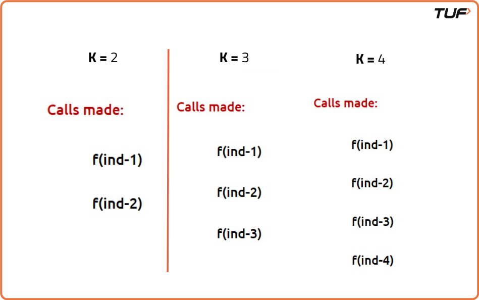

Dynamic Programming: Frog Jump with k Distances (DP 4)
Problem Statement:
A frog wants to climb a staircase with n steps. Given an integer array heights, where heights[i] contains the height of the ith step, and an integer k. To jump from the ith step to the jth step, the frog requires abs(heights[i] - heights[j]) energy, where abs() denotes the absolute difference. The frog can jump from the ith step to any step in the range [i + 1, i + k], provided it exists. Return the minimum amount of energy required by the frog to go from the 0th step to the (n-1)th step.
Examples
Example 1:
Input: heights = [10, 5, 20, 0, 15], k = 2
Output: 15
Explanation:
0th step -> 2nd step, cost = abs(10 - 20) = 10
2nd step -> 4th step, cost = abs(20 - 15) = 5
Total cost = 10 + 5 = 15.
Example 2:
Input: heights = [15, 4, 1, 14, 15], k = 3
Output: 2
Explanation:
0th step -> 3rd step, cost = abs(15 - 14) = 1
3rd step -> 4th step, cost = abs(14 - 15) = 1
Total cost = 1 + 1 = 2.
Disclaimer: Here is the practice link to help you assess your knowledge better. It's highly recommend trying to solve it before looking at the solution.
Memoization Approach
Algorithm
The problem is a variation of the "Frog Jump" dynamic programming problem where the frog can
jump up to k steps. The goal is to reach the last stair (index
n-1) with the minimum cost, where the cost of jumping from stair i
to stair j is the absolute difference |height[i] - height[j]|.
We use recursion with memoization (top-down dynamic programming) to avoid redundant
calculations. The function solveUtil(ind) returns the minimum cost to reach
stair ind.
- Base case: If we're at stair 0, the cost is 0.
- Memoization: If we’ve already computed the cost to reach index
ind, we return it from thedparray. - Recursive case: For each possible jump
jfrom 1 tok, we calculate the cost to reachindby jumping fromind-jand take the minimum of all such costs.

Code
#include <bits/stdc++.h>
using namespace std;
// Function to find the minimum cost to reach index 'ind' using at most 'k' jumps
int solveUtil(int ind, vector<int>& height, vector<int>& dp, int k) {
// Base case: starting point has zero cost
if (ind == 0) return 0;
// Return already computed result
if (dp[ind] != -1) return dp[ind];
// Initialize minimum steps as large value
int mmSteps = INT_MAX;
// Try all possible jumps from 1 to k
for (int j = 1; j <= k; j++) {
// Ensure jump does not go out of bounds
if (ind - j >= 0) {
// Cost of taking the jump
int jump = solveUtil(ind - j, height, dp, k) + abs(height[ind] - height[ind - j]);
// Store the minimum cost
mmSteps = min(jump, mmSteps);
}
}
// Save the result in dp array
return dp[ind] = mmSteps;
}
// Function to get minimum cost to reach end
int solve(int n, vector<int>& height, int k) {
// DP array initialized to -1
vector<int> dp(n, -1);
// Start recursion from last index
return solveUtil(n - 1, height, dp, k);
}
// Driver code
int main() {
// Heights of stones
vector<int> height{30, 10, 60, 10, 60, 50};
int n = height.size();
int k = 2;
// Output the minimum cost
cout << solve(n, height, k) << endl;
return 0;
}
Complexity Analysis
Time Complexity: O(n * k), where n is the number of stairs and
k is the maximum jump allowed. For each index, we compute up to k
recursive calls, each memoized.
Space Complexity: O(n), due to the memoization array dp storing
results for all indices from 0 to n-1.
Tabulation Approach
Algorithm
In this variation of the classic frog jump problem, the frog can jump from any stone to one
of the previous k stones. The cost of each jump is the absolute difference in
height between the stones. The goal is to minimize the total cost to reach the last stone
starting from the first.
Instead of using recursion with memoization, we can solve this iteratively using bottom-up dynamic programming. This helps avoid recursion stack overhead and provides an efficient way to build the solution from the base case.
We use a dp[] array where dp[i] represents the minimum cost to
reach the ith stone.
- We initialize
dp[0] = 0because the frog starts there with no cost. - For every stone from index
1ton-1, we try all possible jump lengthsjfrom1tok. - For every valid jump, we compute the cost as
dp[i - j] + abs(height[i] - height[i - j]). - We take the minimum of all such possible jump costs and store it in
dp[i]. - Finally,
dp[n - 1]contains the minimum cost to reach the last stone.
Code
#include <bits/stdc++.h>
using namespace std;
// Function to compute the minimum cost to reach the end using at most 'k' jumps
int solveUtil(int n, vector<int>& height, vector<int>& dp, int k) {
// Base case: cost to reach the first stone is 0
dp[0] = 0;
// Iterate over each stone
for (int i = 1; i < n; i++) {
// Initialize the minimum cost for this stone as large value
int mmSteps = INT_MAX;
// Try all possible jump lengths from 1 to k
for (int j = 1; j <= k; j++) {
// Ensure jump doesn't go out of bounds
if (i - j >= 0) {
// Cost of jumping from (i - j) to i
int jump = dp[i - j] + abs(height[i] - height[i - j]);
// Keep track of the minimum cost
mmSteps = min(mmSteps, jump);
}
}
// Store the computed minimum cost for this stone
dp[i] = mmSteps;
}
// The last element of dp stores the answer
return dp[n - 1];
}
// Main function to solve the problem
int solve(int n, vector<int>& height, int k) {
// Initialize DP array with -1
vector<int> dp(n, -1);
// Fill DP array iteratively
return solveUtil(n, height, dp, k);
}
// Driver code
int main() {
// Heights of stones
vector<int> height{30, 10, 60, 10, 60, 50};
int n = height.size();
int k = 2;
// Output result
cout << solve(n, height, k) << endl;
return 0;
}
Complexity Analysis
Time Complexity: O(n × k), where n is the number of stones and
k is the maximum number of jumps. We process n elements and for each
we check up to k previous jumps.
Space Complexity: O(n), for the dp array that stores the minimum
cost to reach each stone.